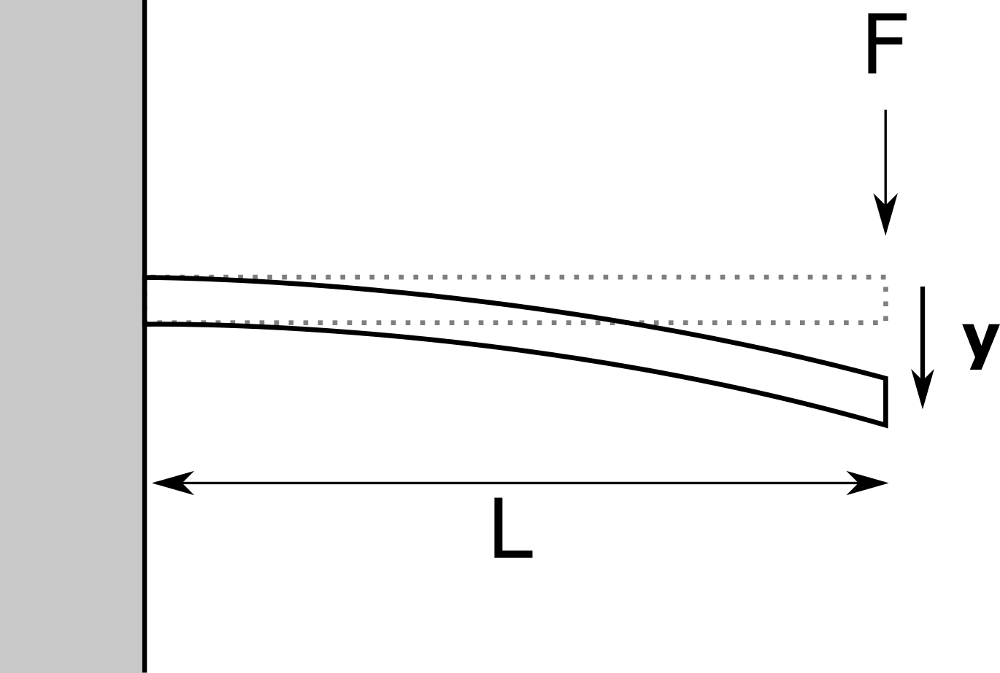
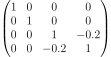

Note
Go to the end to download the full example code.
Estimate the probability of a threshold excedance
A load is applied to a cantilever beam. For construction reasons, the beam must not exceed a bending of 30 cm. The load (F), beam Young’s modulus (E), length (L) and section modulus (I) are uncertain.
{kind=link}
See the cantilever beam model here.
What is the probability that the deviation exceeds the threshold ?
import openturns as ot
import otfmi
import otfmi.example.utility
import openturns.viewer as otv
path_fmu = otfmi.example.utility.get_path_fmu("deviation")
We load the FMU as a FMUFunction here as the event
explicitely requires a function of type openturns.Function.
model_fmu = otfmi.FMUFunction(
path_fmu, inputs_fmu=["E", "F", "L", "I"], outputs_fmu="y"
)
We test the function wrapping the deviation model on a point:
Running the FMU: deviation = 10.527857142857142
We define probability laws on the 4 uncertain inputs:
E = ot.Beta(0.93, 3.2, 2.8e7, 4.8e7)
F = ot.LogNormal()
F.setParameter(ot.LogNormalMuSigma()([30.0e3, 9e3, 15.0e3]))
L = ot.Uniform(250.0, 260.0)
II = ot.Beta(2.5, 4.0, 310.0, 450.0)
According to the laws of mechanics, when the length L increases, the moment of inertia I decreases. The variables L and I are thus negatively correlated.
We assume that the random variables E, F, L and I are dependent and associated with a gaussian copula which correlation matrix:

We implement this correlation:
# Create the Spearman correlation matrix of the input random vector
RS = ot.CorrelationMatrix(4)
RS[2, 3] = -0.2
# Evaluate the correlation matrix of the Normal copula from RS
R = ot.NormalCopula.GetCorrelationFromSpearmanCorrelation(RS)
# Create the Normal copula parametrized by R
mycopula = ot.NormalCopula(R)
And we endly create the composed input probability distribution.
inputDistribution = ot.ComposedDistribution([E, F, L, II], mycopula)
inputDistribution.setDescription(model_fmu.getInputDescription())
Create the event whose probability we want to estimate:
inputRandomVector = ot.RandomVector(inputDistribution)
outputVariableOfInterest = ot.CompositeRandomVector(model_fmu, inputRandomVector)
threshold = 30
event = ot.ThresholdEvent(outputVariableOfInterest, ot.Greater(), threshold)
event.setName("Deviation > %g cm" % threshold)
Parameterize and run the Monte Carlo algorithm:
ot.RandomGenerator.SetSeed(23091926) # set seed for reproducibility
experiment = ot.MonteCarloExperiment()
algo = ot.ProbabilitySimulationAlgorithm(event, experiment)
algo.setMaximumOuterSampling(200)
algo.setMaximumCoefficientOfVariation(0.2)
algo.run()
Draw the distribution of threshold excedance probability:
Get the probability with which the beam deviation exceeds 30 cm:
probability = monte_carlo_result.getProbabilityEstimate()
print(f"Threshold excedance probability: {probability}")
Threshold excedance probability: 0.009999999999999998
Given the uncertainties on the load applied and the beam mechanical parameters, the beam bending has a probability of 0.01 to exceed 30 cm. Is this probability low or not ? It depends on your context 🙂
Total running time of the script: (0 minutes 3.835 seconds)